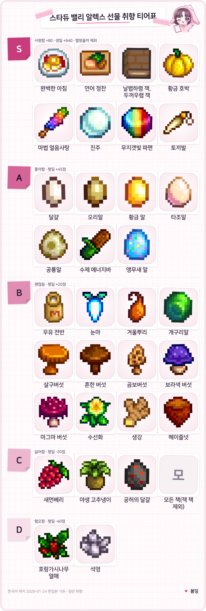

스타듀 밸리 알렉스 호감도 공략 선물 티어표와 하트 이벤트 조건 총정리
스타듀 밸리에서 알렉스는 생일이 여름 13일이고, 최애 선물은 완벽한 아침 · 연어 정찬 · 날렵하렴 잭, 두꺼우렴 잭 세 가지예요. 뭘 줘야 할지 헷갈리셨다면 선물 취향부터 하트 이벤트 조건, 알렉스가 있는 장소까지 이 글 하나로 훑어보실 수 있게 묶어 봤어요.
한국어 위키 알렉스 문서 2026년 1월 24일 편집본, 영문 위키 알렉스 문서 2026년 10월 9일 편집본 기준이에요. 호감도 하트 1개는 우정 점수 250점이에요. 스타듀를 처음 하시는 분, 알렉스와의 결혼을 노리시는 분께 맞춘 정리입니다.
알렉스 프로필 화면 — 생일 여름 13일
알렉스 기본 정보와 생일 선물, 여름 13일은 효과가 8배예요
알렉스의 생일은 여름 13일이고, 이날 선물을 주면 평소의 8배 점수가 들어가요.
| 항목 | 내용 |
|---|---|
| 생일 | 여름 13일 |
| 사는 곳 | 펠리컨 마을 강변로 1, 조지·에블린과 함께 살아요 |
| 결혼 | 가능, 후보 12명 중 한 명이에요 |
| 병원 일정 | 여름 16일 |
| 반려견 | 더스티 |
생일 선물은 주 2회 한도와 별개라서 따로 챙길 수 있는데요, 사랑 선물이면 +640점(별방울차는 영문 위키 기준 750점), 좋아함이면 +360점이 들어가는 반면 싫어함은 -160점, 혐오는 -320점까지 깎이니 이날만큼은 고르는 게 중요하죠.
알렉스 선물 취향 티어표, 최애부터 혐오까지
알렉스가 사랑하는 선물은 최애 세 가지에 누구에게나 사랑받는 다섯 가지를 더한 S등급이고, 가장 싫어하는 D등급은 호랑가시나무 열매와 석영이에요. 별방울차도 알렉스가 사랑하지만 점수가 따로 정해져 있어서 표에서는 뺐어요. 자세한 건 아래 FAQ에 있어요.

알렉스 선물 취향 티어표 — S 사랑함부터 D 혐오함까지
티어표: Stardew Valley Wiki(CC BY-NC-SA) 데이터 기반 봄딩 제작 · 게임 속 아이콘 저작권은 ConcernedApe
- S 사랑함은 평일 기준 +80점이고, 최애 가운데 완벽한 아침은 계란 프라이·우유·해시브라운·팬케이크를, 연어 정찬은 연어·아마란스·케일을 하나씩 넣어 만듭니다. 누구에게나 사랑받는 황금 호박·마법 얼음사탕·진주·무지갯빛 파편·토끼발 다섯 가지도 S등급이에요.
- A 좋아함은 +45점이고, 달걀은 오리알·황금 알·타조알까지 공허의 달걀만 빼고 전부 들어갑니다. 공룡알·수제 에너지바·앵무새 알은 알렉스가 따로 좋아하고(공룡알은 유물, 앵무새 알은 장신구라 달걀 규칙과는 별개), 개구리알은 B에 올라 있어요.
- B 괜찮음은 +20점이고, 우유는 전부, 과일은 과수 열매와 새먼베리만 빼고 전부 들어갑니다. 민들레와 리크, 눈마·겨울뿌리·개구리알도 괜찮음이에요. 살구버섯·흔한 버섯·곰보버섯·보라색 버섯·마그마 버섯과 수선화·생강·헤이즐넛도 여기 들어가요.
- C 싫어함은 -20점, D 혐오함은 -40점입니다. 새먼베리와 야생 고추냉이, 공허의 달걀이 C이고, 날렵하렴 잭, 두꺼우렴 잭을 뺀 모든 책도 C예요. 호랑가시나무 열매와 석영이 D죠.
표에 없는 요리·장인 제작품은 알렉스가 따로 정해 둔 취향이 아니라면 대체로 A로, 누구나 싫어하는 선물은 C로, 혐오하는 선물은 D로 보시면 돼요.
품질 별이 붙는 사랑·좋아함 선물은 배율도 곱해져서 은 1.1배, 금 1.25배, 이리듐 1.5배가 됩니다.
알렉스 하트 이벤트 조건, 2·4·5·6·8·10·14하트
알렉스의 하트 이벤트는 2·4·5·6·8·10·14하트에 있고 단체 10하트가 따로 하나 더 있어요. 위키 하트 이벤트 목록 기준으로 9하트와 12하트에는 이벤트가 없어서 그 구간은 그냥 지나갑니다.
8하트 해변 이벤트
| 하트 | 조건 | 선택지 영향 |
|---|---|---|
| 2 | 맑은 여름날 해변에 알렉스가 있을 때 방문 | 없음 |
| 4 | 오전 9시~오후 4시에 마을 입장 | 없음 |
| 5 | 알렉스가 집에 있을 때 집 방문 | «우리 모두 각자만의 장단점이 있어» +50, «쓸모없다고? 맞는 소리네.» -50 |
| 6 | 알렉스가 집에 있을 때 집 방문 | 없음 |
| 8 | 맑은 여름날 해변에 알렉스가 있을 때 | 없음 |
| 10 | 편지 수신 후 오후 7시~10시 주점 입장 | 없음 |
| 단체 10 | 미혼 상태, 아래 조건 참고 | 선택지 분기 없음 |
| 14 | 결혼 후, 2년차 이후, 일요일 제외 오전 6시~8시 20분에 농가를 나설 때 5,000골드 소지 | 5,000골드 제안 수락 여부로 2부 진행 |
- 여름 해변이 아니어도, 윌리의 보트를 고치고 섬 리조트까지 열어 두셨다면 맑은 날 진저 섬으로 가는 알렉스를 따라가서 계절과 상관없이 8하트 이벤트를 볼 수 있어요.
- 10하트 편지는 해가 지면 주점으로 오라는 내용이고, 프라이빗 룸에서 식사 데이트가 열립니다.
10하트 주점 이벤트
단체 10하트는 미혼 상태에서 모든 미혼 남성 후보에게 부케를 주고 우정을 10하트까지 채운 뒤 스타드롭 주점에 들어가면 시작돼요. 이미 결혼했거나 후보 누구에게든 시들은 부케나 인어의 펜던트를 줬다면 발생하지 않습니다. 토끼발이 있으면 당구 컷신이 나오지만, 없으면 후보 전원이 약 1주 동안 화를 내며 선물도 거절하니 미리 챙겨 두시는 게 좋아요. 세이브당 한 번뿐이에요. 다만 영문판에는 후보 각자의 10하트 이벤트를 모두 본 뒤여야 시작된다고 나와 있어요.
- 14하트 이벤트의 정체는 «비밀 프로젝트»예요. 5,000골드 제안을 받아들이면 주점 뒷방 절반이 그리드볼 중계 공간으로 바뀌어요.
알렉스 일정과 만나는 곳
알렉스는 계절마다 있는 곳이 달라서 여름엔 해변과 아이스크림 가판대, 겨울엔 스파로 찾아가면 돼요.
- 봄·가을 비가 안 오면 오전 8시에 집을 나와 집 오른편 나무 근처에 있습니다. 수요일엔 헤일리와의 하트가 6 미만이면 낮 12시에 헤일리 집으로 가요. 영문 위키엔 헤일리뿐 아니라 알렉스와의 하트도 6 미만이어야 한다고 돼 있어요.
- 여름 8시 30분쯤 해변에 도착하고, 오후 1시부터 5시까지 박물관 옆 아이스크림 가판대에서 일합니다. 16일은 병원에 가 있거든요.
- 겨울 거의 매일 오전 9시~오후 3시에 스파에서 운동하죠.
14하트 이벤트에서 5,000골드 제안을 받아들이셨다면 일요일엔 이야기가 달라져요. 위키 일정표엔 오전 11시에 주점 뒷방으로 가서 오후 3시에 나온다고 돼 있고, 이벤트 설명엔 낮 12시~3시에 그리드볼을 본다고 적혀 있어요.
14하트 이벤트 뒤 일요일 낮의 주점 뒷방
알렉스 호감도 올리는 순서와 안 오를 때 해결법
알렉스 호감도는 평일 사랑 선물을 주다가 여름 13일 생일에 크게 올리는 게 기본이고, 8하트에서 멈추면 부케가 열쇠예요.
호감도 올리는 순서
· 첫째, 평일마다 완벽한 아침이나 연어 정찬을 주 2회 드리세요. 티어표 S등급이라 가장 효율이 좋거든요.
· 둘째, 여름 13일 생일엔 점수가 8배라서 그날 드릴 선물을 미리 챙겨 두세요.
· 셋째, 5하트·6하트 이벤트는 알렉스가 집에 있을 때 들러서 보고, 5하트 선택지는 +50 쪽을 고르세요. 이벤트 선택지 중에 호감도가 오르내린다고 위키에 적힌 건 5하트뿐이에요.
· 마지막으로, 단체 10하트까지 보고 싶다면 청혼 전에 먼저 보세요. 인어의 펜던트를 후보 누구에게든 주면 단체 10하트는 발생하지 않아요. 알렉스만 노린다면 10하트에서 바로 청혼하셔도 돼요. 영문 위키에선 청혼을 받아 주려면 집을 업그레이드해 두셔야 한다고 해요.
호감도가 안 오를 땐 이렇게
· 8하트에서 멈췄다면 부케를 드려 보시는 게 좋아요. 결혼 후보는 부케를 받기 전엔 8하트에서 더 안 올라가고, 받으면 10하트까지 열려요.
· 선물이 안 들어간다면 한도부터 보시는 걸 추천드려요. 하루 한 번, 한 주 두 번까지이고, 두 번을 다 채우면 일요일 아침에 +10점이 더 붙습니다.
· 대화는 하루 한 번 +20점이고, 수요일 질문에서 여름엔 «스포츠계의 전설이 될 운명이야», 가을엔 «유행하는 스타일인 것 같아»를 고르면 +30점입니다.
· 영문 위키에선 Friendship 101이라는 책을 읽으면 우정 증가량이 10% 늘어난다고 해요. 한국어 이름은 확인하지 못해 영문 그대로 적었어요.
· 영문 위키에선 피에르네 잡화점 앞 게시판에 알렉스의 배달 퀘스트가 올라오기도 한다고 해요. 이 퀘스트를 끝내면 우정 150점이 붙어요.
자주 묻는 질문
Q. 알렉스랑 영화관에 가면 좋아하는 영화와 간식은 뭔가요?
«빗속의 울부짖음»과 «웜버스»가 사랑함이고, «자연의 신비: 생기 넘치는 세상의 탐험»만 싫어해요. 영문 위키에선 영화에 초대했을 때 사랑 반응을 보이면 +200점, 좋아함 반응이면 +100점이 들어간다고 해요. 간식은 «별방울 소르베»와 «연어 버거»를 사랑하고, 검은 감초 사탕·돌사탕·새콤 슬라임·솜사탕·얼음 사탕·조자 콜라·조자콘 7가지만 싫어하며 나머지 간식은 좋아합니다.
Q. 알렉스에게 별방울차를 주면 어떻게 되나요?
별방울차는 알렉스가 사랑하는 선물이라 전용 반응 대사가 있어요. 영문 위키에선 어느 주민에게 주든 우정 250점, 생일엔 750점이 붙고 주 2회 한도에도 걸리지 않는다고 해요.
Q. 말을 안 걸면 호감도가 떨어지나요?
인사를 안 하면 호감도가 서서히 줄어요. 하트가 꽉 찬 상태는 예외이고, 결혼한 뒤에도 배우자의 감소는 계속됩니다.
Q. 결혼하면 하트는 어디까지 올라가요?
결혼하면 14하트까지 올라가요. 영문 위키에선 최대 3749점이라고 해요. 12.5하트(3125점)에 이르면 별방울(영문명 Stardrop)도 받을 수 있답니다.
저라면 생일 선물은 미리 모아 두고, 이벤트는 하트가 차는 대로 보시길 추천드려요. 14하트 이벤트는 결혼한 뒤, 게임 2년차 이후에야 열려서 서두르지 않으셔도 됩니다~
✔ 스타듀 밸리 같이 보기 좋은 내용
· 스타듀를 처음 시작하신다면 — 스팀 여름할인 2025 스타듀밸리 만 원 이하 가성비 추천
참고한 곳
· 스타듀 밸리 위키(한국어) 알렉스
· 스타듀 밸리 위키(한국어) 우정
· Stardew Valley Wiki Alex
· Stardew Valley Wiki Friendship